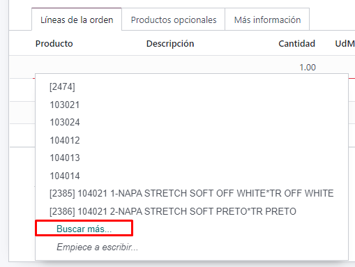
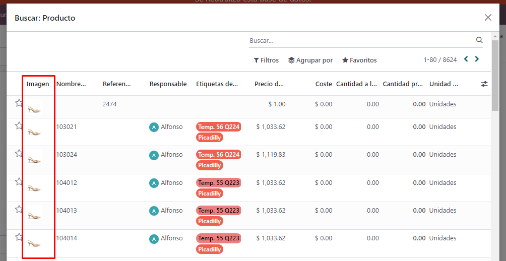
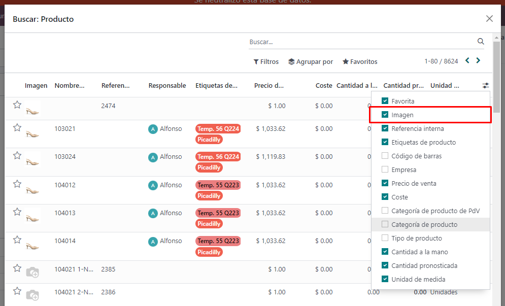

Cuando se añade una línea de producto, y se selecciona la opción de 'Buscar más'.
Se agrega la columna de Imagen, en caso de que el producto tenga imagen cargada sino aparecera un icono gris
La columna de imagen es opcional, se puede mostrar u ocultar a gusto.
